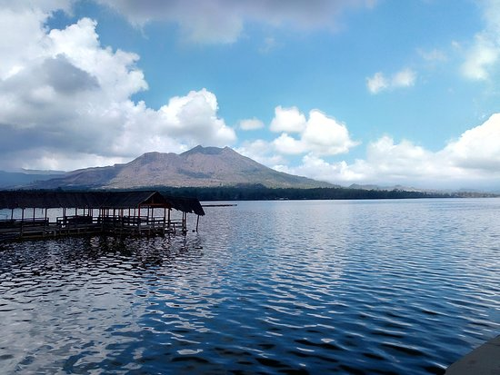

Kintamani adalah sebuah kecamatan di Kabupaten Bangli, Provinsi Bali, Indonesia. Kintamani juga merupakan kawasan wisata yang memiliki banyak objek wisata yang menarik.kawasan ini adalah kawasan dengan pemandangan pegunungan yang unik dan menakjubkan. Waktu yang diperlukan dari kota Dendapasar ke Kintamani berkisar 2 jam perjalanan. Berbagai objek wisata di Kintamani ramai dikunjungi oleh wisatawan mancanegara dan nusantara.
Kawasan Gunung Batur terkenal sebagai objek wisata andalan Kabupaten Bangli. Konon menurut cerita dalam Lontar Susana Bali, Gunung Batur merupakan puncak dari Gunung Mahameru yang dipindahkan Batara Pasupati untuik dijadikan Sthana Betari Danuh (istana Dewi Danu). Pada waktu tertentu, seluruh umat Hindu dari berbagai daerah di Bali datang ke Batur menghaturkan Suwinih untuk mengusir bencana hama yang menimpa ladang mereka. Dengan menghantarkan suminih ini maka kawasan gunung Batur menjadi daerah yang subur. Daerah yang dapat ditonjolkan sebagai objek wisata adalah kawah, kaldera dan danau. Terdapat aliran air dalam tanah yang mengalirkan air Danau Batur, yang muncul menjadi mata air di beberapa tempat di Bali dan dianggap sebagai "Tirta Suci". Wisata budaya yang terdapat di kawasan Gunung Batur adalah Trunyan. Meskipun seluruh penduduk Trunyan beragama Hindu seperti umumnya masyarakat Bali, mereka menyatakan bahwa Hindu Trunyan merupakan Hindu asli warisan kerajaan Majapahit. Di sebelah utara Trunyan terdapat kuban, sebuah tempat makam desa, namun jenazah tidak dikuburkan atau dibakar, melainkan diletakkan di bawah pohon setelah dilakukan upacara kematian yang rumit. Tempat pemakamanan ini dipenuhi oleh tulang-tulang, dan bisa jadi kita menemukan mayat yang masih baru.
Danau Batur adalah danau kawah di Kintamani, Kabupaten Bangli di Bali, terletak sekitar 30 km (19 mil) di timur laut Ubud di Bali. Danau itu berada di dalam kaldera gunung berapi aktif, Gunung Batur, terletak di sepanjang, aktivitas vulkanis Cincin Api Pasifik. Danau Batur merupakan salah satu objek wisata yang ada di kintamani, Kabupaten Bangli. Danau Batur memiliki keindahan yang bisa menarik wisatawan lokal maupun wisataman asing.
Pura Ulun Danu Beratan / Pura Penataran Agung Ulun Danu Beratan adalah salah satu dari sembilan Pura Khayangan Jagat yang mengelilingi Pulau Bali, Pura ini adalah tempat yang digunakan oleh umat Hindu di Bali maupun Indonesia untuk memuja Tuhan Yang Maha Esa dalam manifestasi nya sebagai "Tri Murti" (Brahma, Wisnu & Siwa) dalam pengharapannya untuk kesuburan Tanah, Kemakmuran dan kesejahteraan manusia termasuk juga demi lestarinya alam semesta. Secara Historis Pura Ulun Danu Beratan dibangun oleh "I Gusti Agung Putu" Raja Puri Mengwi pertama pada Tahun Saka 1556 (Tahun Masehi 1634 masehi), dan diempon oleh Empat Satakan dari Desa Adat di sekitar Pura.
Rp 30.000/Drink+Meal
Rp 673.000/Night
Rp 326.000/Night